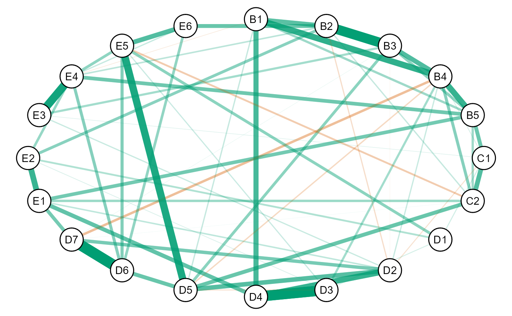
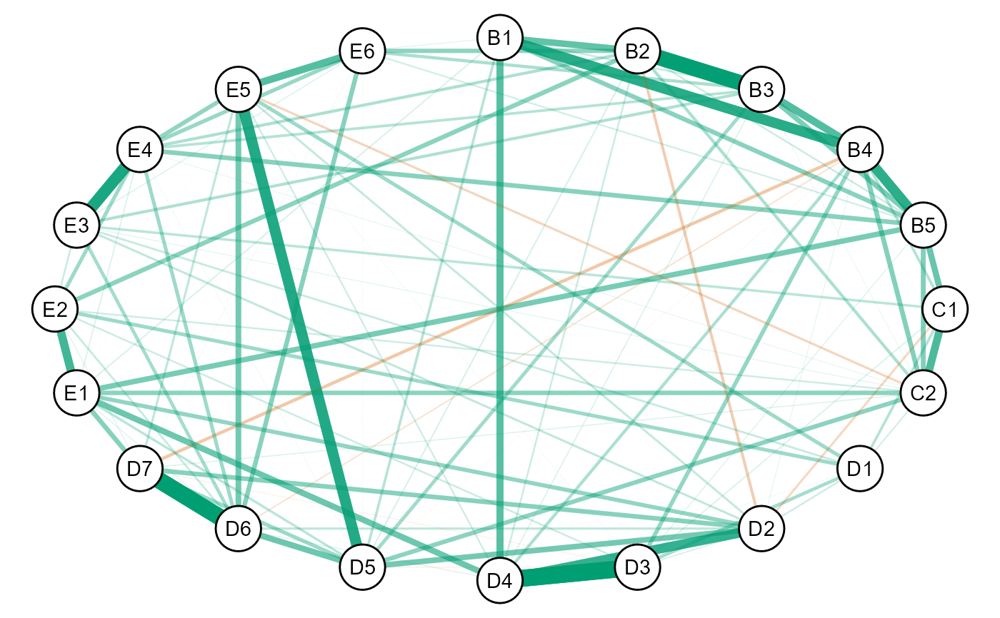
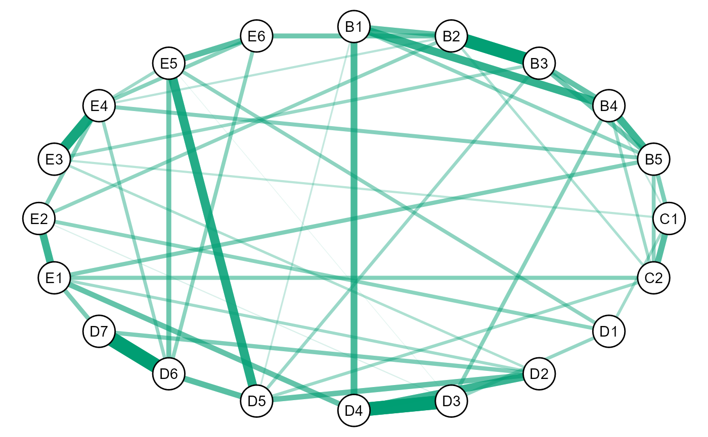

Gaussian graphical modeling with nonconvex regularization. A thorough survey of these penalties, including simulation studies investigating their properties, is provided in Williams (2020) .
ggmncv( R, n, penalty = "atan", ic = "bic", select = "lambda", gamma = NULL, lambda = NULL, n_lambda = 50, lambda_min_ratio = 0.01, n_gamma = 50, initial = NULL, LLA = FALSE, unreg = FALSE, maxit = 10000, thr = 1e-04, store = TRUE, progress = TRUE, ebic_gamma = 0.5, penalize_diagonal = TRUE, ... )
| R | Matrix. A correlation matrix of dimensions p by p. |
|---|---|
| n | Numeric. The sample size used to compute the information criterion. |
| penalty | Character string. Which penalty should be used (defaults to |
| ic | Character string. Which information criterion should be used (defaults to |
| select | Character string. Which tuning parameter should be selected
(defaults to |
| gamma | Numeric. Hyperparameter for the penalty function.
Defaults to 3.7 ( |
| lambda | Numeric vector. Regularization (or tuning) parameters.
The defaults is |
| n_lambda | Numeric. The number of \(\lambda\)'s to be evaluated. Defaults to 50.
This is disregarded if custom values are provided for |
| lambda_min_ratio | Numeric. The smallest value for |
| n_gamma | Numeric. The number of \(\gamma\)'s to be evaluated. Defaults to 50.
This is disregarded if custom values are provided in |
| initial | A matrix (p by p) or custom function that returns
the inverse of the covariance matrix . This is used to compute
the penalty derivative. The default is |
| LLA | Logical. Should the local linear approximation be used (default to |
| unreg | Logical. Should the models be refitted (or unregularized) with maximum likelihood
(defaults to |
| maxit | Numeric. The maximum number of iterations for determining convergence of the LLA
algorithm (defaults to |
| thr | Numeric. Threshold for determining convergence of the LLA algorithm
(defaults to |
| store | Logical. Should all of the fitted models be saved (defaults to |
| progress | Logical. Should a progress bar be included (defaults to |
| ebic_gamma | Numeric. Value for the additional hyper-parameter for the
extended Bayesian information criterion (defaults to 0.5,
must be between 0 and 1). Setting |
| penalize_diagonal | Logical. Should the diagonal of the inverse covariance
matrix be penalized (defaults to |
| ... | Additional arguments passed to |
An object of class ggmncv, including:
Theta Inverse covariance matrix
Sigma Covariance matrix
P Weighted adjacency matrix
adj Adjacency matrix
lambda Tuning parameter(s)
fit glasso fitted model (a list)
Several of the penalties are (continuous) approximations to the \(\ell_0\) penalty, that is, best subset selection. However, the solution does not require enumerating all possible models which results in a computationally efficient solution.
L0 Approximations
Atan: penalty = "atan" (Wang and Zhu 2016)
.
This is currently the default.
Seamless \(\ell_0\): penalty = "selo" (Dicker et al. 2013)
.
Exponential: penalty = "exp" (Wang et al. 2018)
Log: penalty = "log" (Mazumder et al. 2011)
.
Sica: penalty = "sica" (Lv and Fan 2009)
Additional penalties:
SCAD: penalty = "scad" (Fan and Li 2001)
.
MCP: penalty = "mcp" (Zhang 2010)
.
Adaptive lasso (penalty = "adapt"): Defaults to \(\gamma = 0.5\)
(Zou 2006)
. Note that for consistency with the
other penalties, \(\gamma \rightarrow 0\) provides more penalization and
\(\gamma = 1\) results in \(\ell_1\) regularization.
Lasso: penalty = "lasso" (Tibshirani 1996)
.
gamma (\(\gamma\)):
The gamma argument corresponds to additional hyperparameter for each penalty.
The defaults are set to the recommended values from the respective papers.
LLA
The local linear approximate is noncovex penalties was described in
(Fan et al. 2009)
. This is essentially an iteratively
re-weighted (g)lasso. Note that by default LLA = FALSE. This is due to
the work of Zou and Li (2008)
, which suggested that,
so long as the starting values are good enough, then a one-step estimator is
sufficient to obtain an accurate estimate of the conditional dependence structure.
In the case of low-dimensional data, the sample based inverse
covariance matrix is used for the starting values. This is expected to work well,
assuming that \(n\) is sufficiently larger than \(p\).
Generalized Information Criteria
The following are the available GIC:
\(\textrm{GIC}_1: |\textbf{E}| \cdot \textrm{log}(n)\)
(ic = "gic_1" or ic = "bic")
\(\textrm{GIC}_2: |\textbf{E}| \cdot p^{1/3}\)
(ic = "gic_2")
\(\textrm{GIC}_3: |\textbf{E}| \cdot 2 \cdot \textrm{log}(p)\)
(ic = "gic_3" or ic = "ric")
\(\textrm{GIC}_4: |\textbf{E}| \cdot 2 \cdot \textrm{log}(p) +
\textrm{log}\big(\textrm{log}(p)\big)\)
(ic = "gic_4")
\(\textrm{GIC}_5: |\textbf{E}| \cdot \textrm{log}(p) +
\textrm{log}\big(\textrm{log}(n)\big) \cdot \textrm{log}(p)\)
(ic = "gic_5")
\(\textrm{GIC}_6: |\textbf{E}| \cdot \textrm{log}(n)
\cdot \textrm{log}(p)\)
(ic = "gic_6")
Note that \(|\textbf{E}|\) denotes the number of edges (nonzero relations) in the graph, \(p\) the number of nodes (columns), and \(n\) the number of observations (rows). Further each can be understood as a penalty term added to negative 2 times the log-likelihood, that is,
\(-2 l_n(\hat{\boldsymbol{\Theta}}) = -2 \Big[\frac{n}{2} \textrm{log} \textrm{det} \hat{\boldsymbol{\Theta}} - \textrm{tr}(\hat{\textbf{S}}\hat{\boldsymbol{\Theta}})\Big]\)
where \(\hat{\boldsymbol{\Theta}}\) is the estimated precision matrix (e.g., for a given \(\lambda\) and \(\gamma\)) and \(\hat{\textbf{S}}\) is the sample-based covariance matrix.
initial
initial not only affects performance (to some degree) but also
computational speed. In high dimensions (defined here as p > n),
or when p approaches n, the precision matrix can become quite unstable.
As a result, with initial = NULL, the algorithm can take a very (very) long time.
If this occurs, provide a matrix for initial (e.g., using lw).
Alternatively, the penalty can be changed to penalty = "lasso", if desired.
The R package glassoFast is under the hood of ggmncv
(Sustik and Calderhead 2012)
, which is much faster than
glasso when there are many nodes.
Dicker L, Huang B, Lin X (2013).
“Variable selection and estimation with the seamless-L 0 penalty.”
Statistica Sinica, 929--962.
Fan J, Feng Y, Wu Y (2009).
“Network exploration via the adaptive LASSO and SCAD penalties.”
The annals of applied statistics, 3(2), 521.
Fan J, Li R (2001).
“Variable selection via nonconcave penalized likelihood and its oracle properties.”
Journal of the American statistical Association, 96(456), 1348--1360.
Foygel R, Drton M (2010).
“Extended Bayesian Information Criteria for Gaussian Graphical Models.”
Advances in Neural Information Processing Systems, 604--612.
1011.6640.
Kim Y, Kwon S, Choi H (2012).
“Consistent model selection criteria on high dimensions.”
The Journal of Machine Learning Research, 13, 1037--1057.
Lv J, Fan Y (2009).
“A unified approach to model selection and sparse recovery using regularized least squares.”
The Annals of Statistics, 37(6A), 3498--3528.
Mazumder R, Friedman JH, Hastie T (2011).
“Sparsenet: Coordinate descent with nonconvex penalties.”
Journal of the American Statistical Association, 106(495), 1125--1138.
Sustik MA, Calderhead B (2012).
“GLASSOFAST: An efficient GLASSO implementation.”
UTCS Technical Report TR-12-29 2012.
Tibshirani R (1996).
“Regression shrinkage and selection via the lasso.”
Journal of the Royal Statistical Society: Series B (Methodological), 58(1), 267--288.
Wang Y, Fan Q, Zhu L (2018).
“Variable selection and estimation using a continuous approximation to the L0 penalty.”
Annals of the Institute of Statistical Mathematics, 70(1), 191--214.
Wang Y, Zhu L (2016).
“Variable selection and parameter estimation with the Atan regularization method.”
Journal of Probability and Statistics.
Williams DR (2020).
“Beyond Lasso: A Survey of Nonconvex Regularization in Gaussian Graphical Models.”
PsyArXiv.
Zhang C (2010).
“Nearly unbiased variable selection under minimax concave penalty.”
The Annals of statistics, 38(2), 894--942.
Zou H (2006).
“The adaptive lasso and its oracle properties.”
Journal of the American statistical association, 101(476), 1418--1429.
Zou H, Li R (2008).
“One-step sparse estimates in nonconcave penalized likelihood models.”
Annals of statistics, 36(4), 1509.
# \donttest{ # data Y <- GGMncv::ptsd S <- cor(Y) # fit model # note: atan default fit_atan <- ggmncv(S, n = nrow(Y), progress = FALSE) # plot plot(get_graph(fit_atan), edge_magnify = 10, node_names = colnames(Y)) #> Registered S3 method overwritten by 'GGally': #> method from #> +.gg ggplot2  # lasso fit_l1 <- ggmncv(S, n = nrow(Y), progress = FALSE, penalty = "lasso") # plot plot(get_graph(fit_l1), edge_magnify = 10, node_names = colnames(Y))  # for these data, we might expect all relations to be positive # and thus the red edges are spurious. The following re-estimates # the graph, given all edges positive (sign restriction). # set negatives to zero (sign restriction) adj_new <- ifelse( fit_atan$P <= 0, 0, 1) check_zeros <- TRUE # track trys iter <- 0 # iterate until all positive while(check_zeros){ iter <- iter + 1 fit_new <- constrained(S, adj = adj_new) check_zeros <- any(fit_new$wadj < 0) adj_new <- ifelse( fit_new$wadj <= 0, 0, 1) } # make graph object new_graph <- list(P = fit_new$wadj, adj = adj_new) class(new_graph) <- "graph" plot(new_graph, edge_magnify = 10, node_names = colnames(Y))  # }